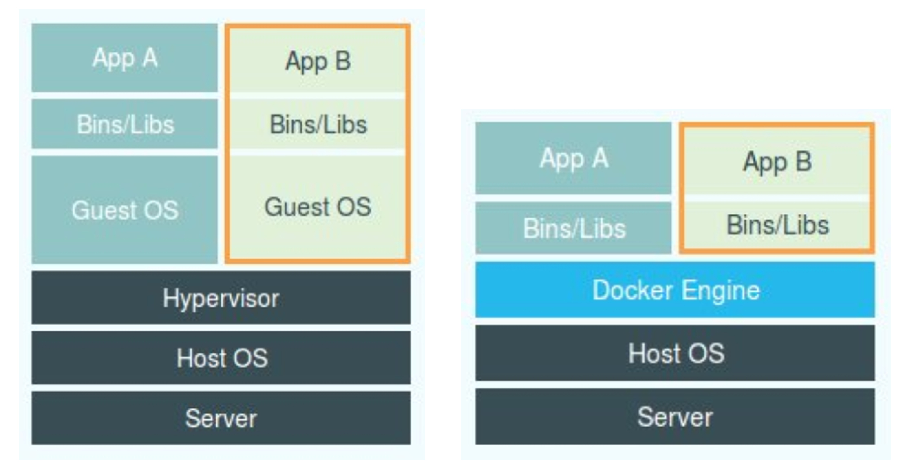

docker中的Namespace和Cgroups
docker中的Namespace和Cgroups
docker内部用到的技术其实很早就出现了，也应用到了很多的场景当中，尤其在PaaS中用到的特别多。
docker之所以流行是因为如下几个原因：
- 他发明了“镜像”的概念，解决了PaaS中要为不同用户不同服务打压缩包繁琐的过程
- 把一个完全纯后端的概念，通过非常好的封装能够让广大的开发者容易上手，比如前端工程师可以经过简单的学习就能独立部署自己的项目
docker容器采用了Namespace和Cgroups实现环境隔离。
Namespace技术实际上修改了应用进程看待整个计算机的视图，既它的“视线”被操作系统做了限制，只能看到某些指定的内容。对于宿主机来说，这些被“隔离”了的进程和其他进程并没有太大区别。这也是和虚拟机根本区别的地方，它并没有单独划分出硬件，在划分的硬件上再启动一个系统。而只是对进程进行了“隔离”。具体的Namespace都有：Mount、UTS、IPC、Network和Userdocker。
其实每一个容器都是docker daemon下的子进程
# 查看容器内部进程
z@master:~$ sudo docker top 7cf736989611
UID PID PPID C STIME TTY TIME CMD
root 35890 35772 0 Nov05 ? 00:00:33 /root/xx
# 查看35772的父进程
z@master:~$ ps -le | grep 35772
4 S 0 35772 2165 0 80 0 - 2491 - ? 00:01:07 docker-containe容器内新启动的进程也是docker daemon下的子进程
所以说，容器，其实是一种特殊的进程

上面的图是虚拟机和docker对比不太准确的一个图，Docker Engine是不能和Hypervisor放到同一级的，并不会像Hypervisor一样将虚拟机的指令转换成宿主机的指令，在Docker中，是宿主机直接管理进程的
因为没有Hypervisor和Guest OS，容器相较于虚拟机有更高的性能，更小的资源消耗。当然有利也有弊，基于Namespace隔离就会隔离不彻底，容器就是宿主机上的一种进程，那么容器之间就是共享宿主机操作系统内核的。这就意味着在windows上不能运行Linux容器，或者在低版本的Linux宿主机上运行高版本的Linux是行不通的。第二个就是有些资源是不能被Namespace隔离的，比如：时间。
容器在通过Namespace技术隔离后，还有另外一个重要的技术就是Cgroups，Cgroups的全称是Linux Control Group 。它最重要的作用，就是限制一个进程组能够使用的资源，包括CPU、内存、磁盘、网络带宽等
Cgroups也有它自己的不足，比如/proc文件系统，/proc文件下存储的是当前内核运行状态的一系列特殊文件，用户可以通过访问这些文件查看系统以及它正在运行的进程的信息，这也是top指令最主要的数据来源。
但是，你如果在容器里执行top指令，就会发现他显示的是宿主机的数据，而不是当前容器的数据，原因是，/proc文件系统并不了解Cgroups的存在，不知道Cgroups对这个容器做了什么样的限制
下面说一下Mount Namespace，我们在每个容器内部都只能看到该容器的文件系统而不是宿主机的文件系统就是得益于该技术，而Mount Namespace技术就是基于chroot开发出来的。chroot命令用于设置一个进程的根目录。而这个挂载在容器根目录上、用来为容器提供隔离后执行环境的文件系统，就是所谓的“容器镜像”，有个更加专业的名字：rootfs（根文件系统）。
需要注意的是rootfs只是规定了操作系统的文件、目录和结构等，只是一个框架，并不包含内核，容器用的是宿主机的内核。正是由于rootfs才有了容器中最为重要的一致性，在打镜像的时候会将整个操作系统的文件系统进行打包，这样就避免了需要在不同环境上运行程序的各种适配问题。
到这里，我们就知道了docker他最核心的原理就是为创建的进程：
- 启用Linux Namespace配置
- 设置指定的Cgroups参数
- 切换进程的根目录
docker在rootfs的基础上创新了“层”的概念，通过联合文件系统（Union File System）实现。
想一下如果没有层的概念，我们要对一个基础镜像修改时，每个人都得执行下制作整个镜像的过程，而且制作后的镜像他们完全没有关联。
如果有了层的概念，我们只需要在基础镜像上进行修改，每个人都用同一个基础镜像，制作后的的镜像都是基于同一个基础镜像。
docker中的层可以分为三层（以aufs为例）：

只读层
包含了操作系统最基础的一部分
init层
专门用来存放/etc/hosts、/etc/resolv.conf等信息。这一层的作用就是可以让用户修改一些和本容器强相关的配置，比如hostname、指定的域名解析等。这些修改都只针对该容器，不同容器会有不同配置。而这些修改是不会被
docker commit制作到镜像当中可读写层
在这个层可以对操作系统中的文件进行修改，而进行的修改，比如删除、修改等。都是将只读层的文件拷贝出来，重新写一个文件。删除操作也是，并不会实际删除文件，比如删除
test文件，在读写层会新写一个.wh.test文件，标识该test文件已经被删除


%E6%8E%88%E6%9D%83%E7%B1%BB%E5%9E%8B%2Fthumbnail.png)

%E5%AE%9E%E7%8E%B0%E7%AE%80%E5%8D%95%E7%9A%84OAuth2.0%E6%B5%81%E7%A8%8B%2Fthumbnail.png)
%E6%A6%82%E8%BF%B0%2Fthumbnail.png)